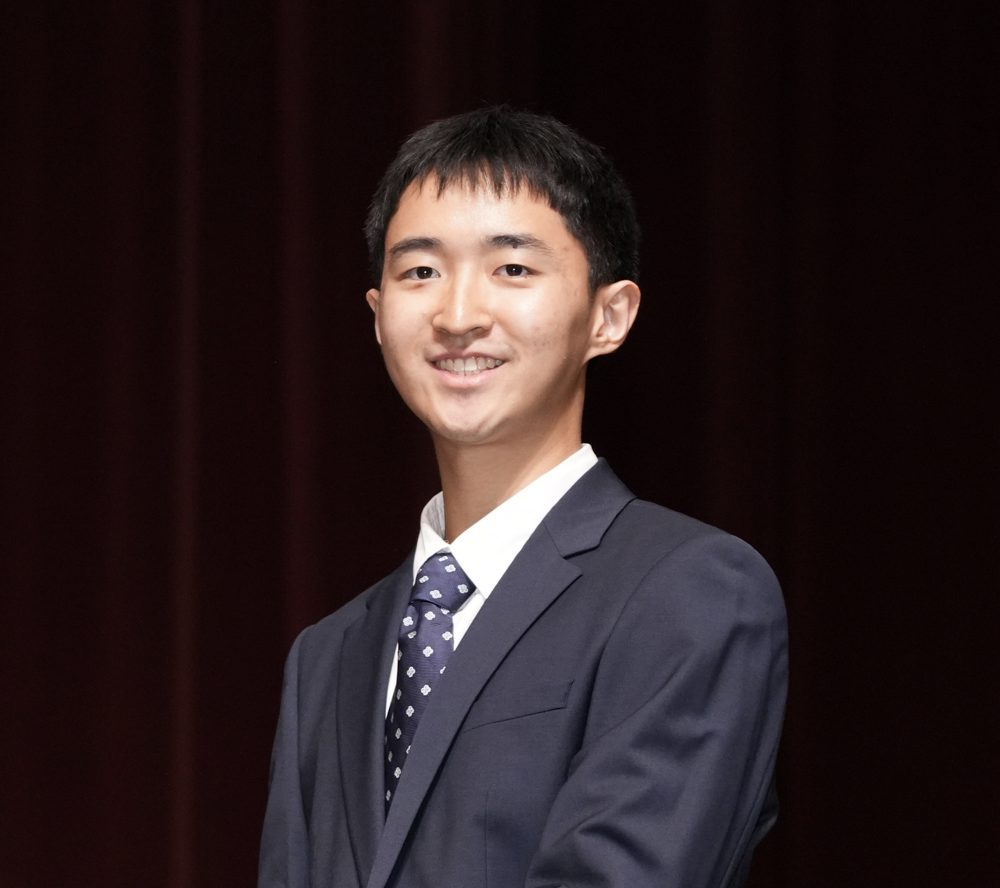
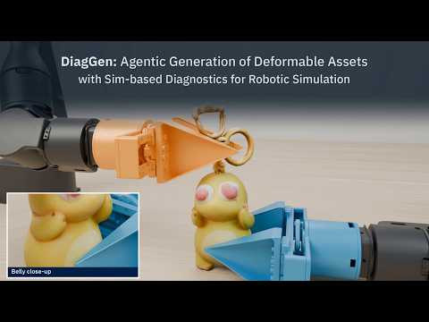
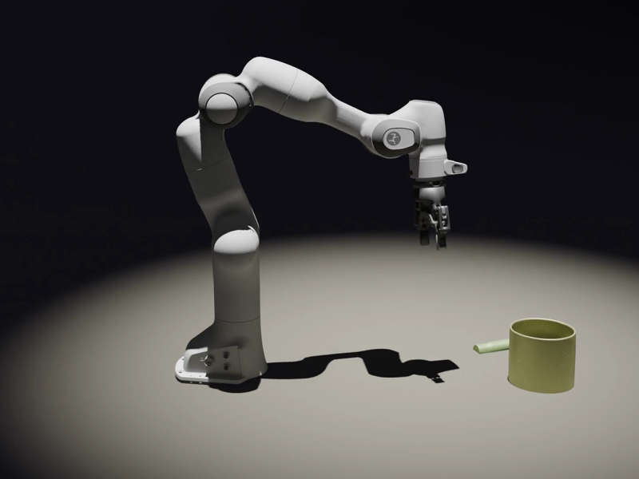
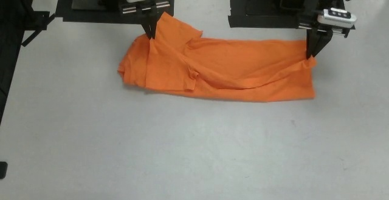

Human-Centered Robotics Lab, NUS
Feb–Sep 2026Full-time Researcher · Robot learning and deformable simulation.
I’m an Engineering undergraduate at the University of Cambridge, St Edmund’s College.
My research interests are robot learning, physics-based simulation, and agentic world modeling. Previously, I was a full-time researcher at the Human-Centered Robotics Lab, National University of Singapore.


CoRL 2026 Workshop · * Equal contribution
Generating deformable simulation assets from images, with simulation-based diagnosis and repair.

CoRL 2026 Workshop
Turning real robot interaction recordings into simulatable digital twins with vision-language agents.

CoRL 2026
Learning visual rewards for robotic manipulation using one reference demonstration per task.
Full-time Researcher · Robot learning and deformable simulation.
Director · Led robotics outreach for 400+ children with a team of 30 volunteers.
BA/MEng, Engineering · St Edmund’s College
SJIPF–St Edmund’s College Merit Scholarship
International Baccalaureate · 44/45